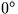
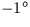
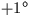
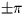
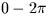
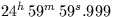

There are five routines for decoding numbers from a character string, such as might be entered using a keyboard. They all work in the same style, and successive calls can work their way along a single string decoding a sequence of numbers of assorted types. Number fields can be separated by spaces or commas, and can be defaulted to previous values or to preset defaults.
Three of the routines decode single numbers: sla_INTIN (integer), sla_FLOTIN (single precision floating point) and sla_DFLTIN (double precision). A minus sign can be detected even when the number is zero; this avoids the frequently-encountered ``minus zero'' bug, where declinations etc. in the range  to  mysteriously migrate to the range to .Here is an example (in Fortran) where we wish to read two numbers, and integer IX and a real, Y, with X defaulting to zero and Y defaulting to X:
DOUBLE PRECISION Y
CHARACTER*80 A
INTEGER IX,I,J
* Input the string to be decoded
READ (*,'(A)') A
* Preset IX to its default value
IX = 0
* Point to the start of the string
I = 1
* Decode an integer
CALL sla_INTIN(A,I,IX,J)
IF (J.GT.1) GO TO ... (bad IX)
* Preset Y to its default value
Y = DBLE(IX)
* Decode a double precision number
CALL sla_DFLTIN(A,I,Y,J)
IF (J.GT.1) GO TO ... (bad Y)
Two additional routines decode a 3-field sexagesimal number: sla_AFIN (degrees, arcminutes, arcseconds to single precision radians) and sla_DAFIN (the same but double precision). They also work using other units such as hours etc. if you multiply the result by the appropriate factor. An example Fortran program which uses sla_DAFIN was given earlier, in section 1.2.
SLALIB provides four routines for expressing an angle in radians in a preferred range. The function sla_RANGE expresses an angle in the range ;sla_RANORM expresses an angle in the range . The functions sla_DRANGE and sla_DRANRM are double precision versions.
Several routines (sla_CTF2D, sla_CR2AF etc.) are provided to convert angles to and from sexagesimal form (hours, minute, seconds or degrees, arcminutes and arcseconds). They avoid the common ``converting from integer to real at the wrong time'' bug, which produces angles like .Here is a program which displays an hour angle stored in radians:
DOUBLE PRECISION HA
CHARACTER SIGN
INTEGER IHMSF(4)
:
CALL sla_DR2TF(3,HA,SIGN,IHMSF)
WRITE (*,'(1X,A,3I3.2,''.'',I3.3)') SIGN,IHMSF
SLALIB --- Positional Astronomy Library